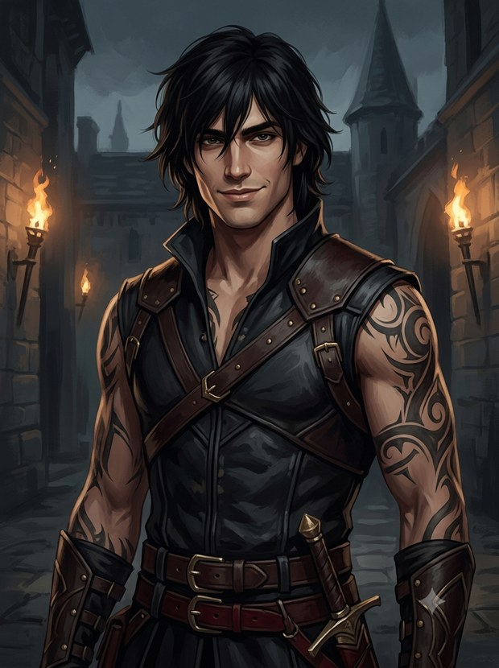
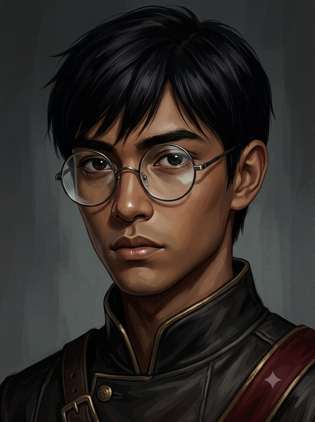
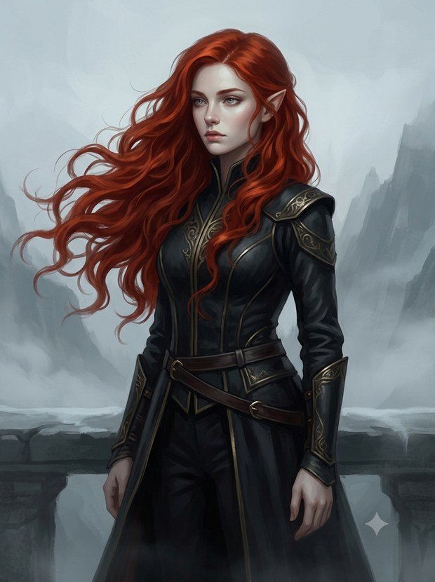
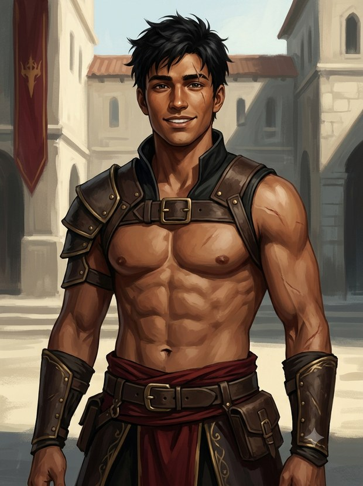
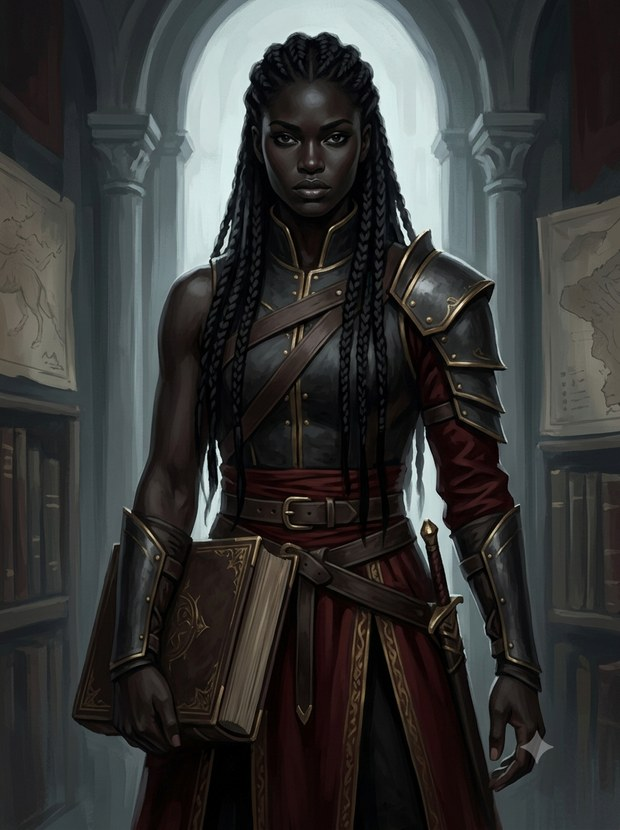
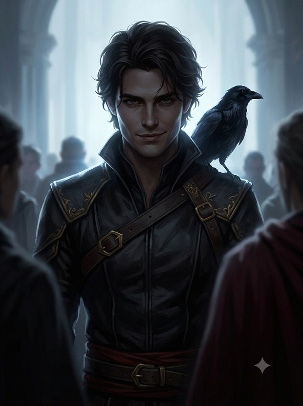

«El que cruza, entra. El que cae, nunca existió.»
Súbele el volumen y ponlo en pantalla completa. La Sesión 3 se juega este lunes 8:00 PM.
Te han conscripto en la academia más letal del reino para intentar convertirte en lo más temido y admirado que existe: un jinete de dragón. Muchos entran. Pocos salen con vida.
Basgiath cribra a los débiles. Los personajes pueden morir —por eso empiezas con varios reclutas y solo el que sobrevive se convierte en tu héroe.
Rivalidades, secretos, pactos y una academia que no cuenta toda la verdad. Lo que decides con quién y por qué pesa tanto como tu espada.
Si sobrevives al primer año, un dragón —colosal, antiguo y mortal— decidirá si ata su vida a la tuya. Nadie elige a su dragón: es el dragón quien elige.
Es un juego de conversación e imaginación. El Director describe el mundo; tú dices qué hace tu personaje. Cuando el resultado es incierto, lo decide un dado de 20 caras. Rol… con dados.
1d20 + el modificador de tu característica. Si igualas o superas la Clase de Dificultad (CD), tienes éxito. Persuadir, mentir, colarte, recordar un dato… todo se tira.
Guerrero (versátil y resistente), Bárbaro (furia y aguante) y Pícaro (astucia y precisión). La magia no viene de la clase: viene de tu dragón.
Algunos serán aliados, otros rivales, otros… algo más. Ninguno es lo que parece a primera vista.

Alto, tatuado, imposible de ignorar. Puede darte las mejores vibras… o helarte la sangre. Nadie sabe de qué lado está.

Menudo y de lentes, la mente más afilada del Ala Cuarta. Callado… hasta que ve una injusticia. Entonces no se calla.

Pelirroja, distante, como si perteneciera a otro mundo. Casi nadie ha oído su voz. Inalcanzable… para casi todos.

Bronceado, lleno de cicatrices y de buen humor. Despistado de manual… y mucho más letal en la arena de lo que aparenta.

Alta e imponente, se sabe el Códice de memoria y te lo va a citar. Fuerza y cerebro en la misma persona.

Aparece a contraluz cuando menos lo esperas, con una sonrisa que lo promete todo… y se desvanece igual. ¿Quién es en realidad?
Todo lo que necesitas para tu personaje. Descárgalo, imprímelo y trae dados.
Lo que ha ocurrido hasta ahora. (El Director actualiza esto tras cada sesión.)
Bajo una tormenta que mordía, los reclutas cruzaron el Parapeto —una cinta de piedra negra sin red ni barandal— y vieron caer a los primeros. Los que llegaron vivos entraron al Ala Cuarta, donde el frío, el recelo de las Alas de Hierro y unos cuantos rostros por conocer los esperaban.
Las semanas se contaron en cicatrices. Entre clases del Códice, duelos en la arena y noches de barracón, el escuadrón empezó a forjar lazos… y rivalidades. Y en la lejanía, más allá de las murallas, un aullido sin nombre recordó a todos que Basgiath no cuenta toda la verdad.
La víspera de la Presentación hirvió. Bottom retó a Auri por el liderazgo del escuadrón y los instructores dejaron que el acero decidiera. Pero antes de que el duelo tuviera ganador, algo salido de los partes robados en los archivos irrumpió en el círculo. Cuando el polvo bajó, Auri Pendragon yacía en el suelo, y Dax —que se lanzó a la batalla al verla caer— perdió un brazo defendiendo a los suyos.
El mando cambió de manos sin que nadie lo celebrara: se heredó entre lágrimas. El escuadrón entra a la Presentación de luto, guardando un secreto que pesa más que cualquier título… y sabiendo, por fin, que Basgiath no cuenta toda la verdad.
The Gauntlet y el día de los dragones. (Se escribirá aquí después de jugarla.)